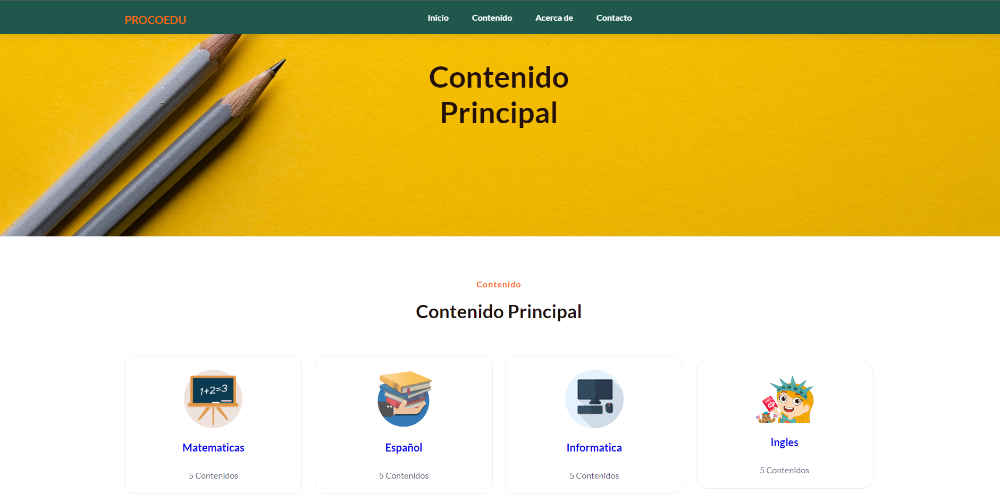

PROCOEDU

Actualmente en construccion [PROYECTO NO CONCLUIDO]
Nuestra plataforma educativa para centros escolares de 3ro a 6to grado es una solución innovadora diseñada para transformar la forma en que los estudiantes aprenden y los educadores enseñan. Al utilizar nuestra plataforma, tanto los alumnos como los docentes experimentarán una serie de beneficios significativos.
Para los estudiantes, nuestra plataforma proporciona un entorno de aprendizaje interactivo y estimulante. Les ofrece acceso a contenido educativo enriquecedor, diseñado específicamente para su nivel de grado. Nuestra plataforma incluye recursos multimedia, actividades interactivas y evaluaciones formativas que ayudan a los estudiantes a comprender y aplicar los conceptos de manera práctica. Además, fomentamos el aprendizaje colaborativo y la participación activa mediante herramientas de comunicación y colaboración, lo que permite a los estudiantes compartir ideas y trabajar juntos en proyectos.
Para los educadores, nuestra plataforma simplifica y mejora el proceso de enseñanza. Los docentes pueden acceder a un amplio banco de recursos educativos, que incluye planes de lecciones, materiales didácticos y actividades complementarias. Nuestra plataforma también ofrece herramientas de seguimiento del progreso y evaluación, lo que les permite monitorear el rendimiento de los estudiantes de manera individual y grupal. Esto les brinda información valiosa para adaptar su enseñanza y brindar intervenciones personalizadas. Además, nuestra plataforma facilita la comunicación entre los educadores y los padres, manteniéndolos informados sobre el progreso académico y el desempeño de los estudiantes.
Presentar este proyecto conlleva una gran responsabilidad, ya que estamos comprometidos con el éxito educativo de los estudiantes y la mejora del proceso de enseñanza-aprendizaje. Como equipo, asumimos la responsabilidad de proporcionar contenido educativo de alta calidad, actualizado y alineado con los estándares curriculares. También nos esforzamos por garantizar una plataforma tecnológica segura y fácil de usar, que brinde una experiencia positiva tanto para estudiantes como para educadores.
Además, estamos comprometidos en mantener una comunicación abierta y continua con los centros escolares, escuchando sus necesidades y retroalimentación para mejorar constantemente nuestra plataforma. Trabajamos en estrecha colaboración con los educadores para garantizar que nuestra plataforma se adapte a sus requisitos pedagógicos y les brinde las herramientas y recursos adecuados para enriquecer su labor docente.
Rol Técnico
- HTML
- CSS
- JavaScript
- SASSS